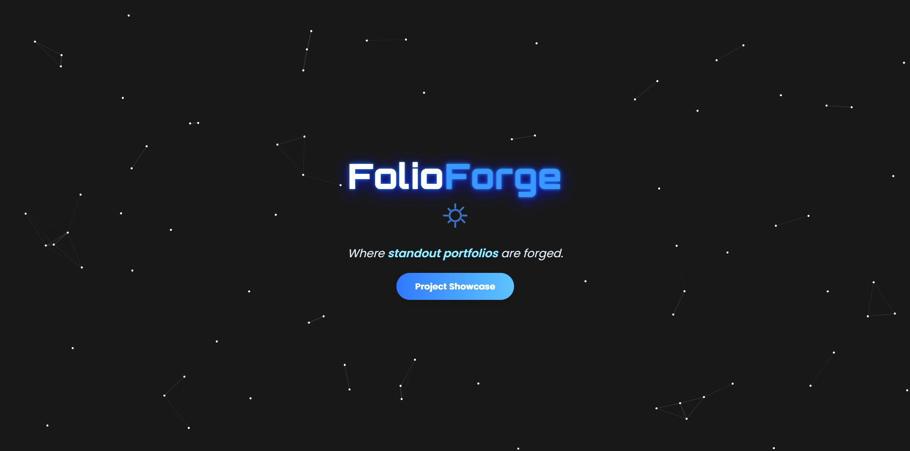

Projects
My technical work includes course-based systems, web projects, and learning activities that demonstrate my growth in software development, design, and problem solving.
IoT Project
- Project Title: Design and Development of an IoT-Based RFID Attendance, Schedule Validation, and Smart Door Access Control System for Faculty
- Description: This project is a smart classroom access and attendance system designed for faculty members. It combines RFID technology, schedule validation, and IoT-based access control to manage room entry and ensure that only authorized faculty with a valid schedule can unlock the classroom door.
- Objectives: The project aims to strengthen classroom security and improve attendance monitoring by allowing only scheduled faculty members to enter a room using their personalized RFID card. It also checks the assigned schedule before granting access and denies entry when no valid schedule is found.
- Technologies / Components Used: RFID reader, RFID tags, smart lock, microcontroller, web-based access management system, schedule database, IoT communication modules, and system monitoring interface for validation and attendance tracking.
- Your Role / Contribution: As the system analyst, I analyzed the project requirements, defined the system workflow, and ensured the access logic aligned with the classroom scheduling and validation process. I contributed to the design, requirement analysis, process documentation, and coordination with the team to support the successful implementation of the smart lock and RFID-based access system.
- Evidence: The project output is available in the GitHub repository: AI Faculty Management Web. Supporting evidence may include system screenshots, access logs, flow diagrams, and documentation from the project deployment.
- Project Output / Result: The system successfully unlocks the classroom door when a faculty member’s RFID is recognized and their schedule matches the assigned classroom. If the faculty member is not scheduled for that room or does not have a valid access schedule, the smart door remains locked to prevent unauthorized entry.
Capstone Project
- Project Title: Development of an AI Assisted Web-Based Faculty Scheduling and Requirements Management System
- Description: This capstone project is an enhanced version of the earlier web-based faculty access system, expanded into an automated scheduling and requirements management platform. It is designed to help program chairs and faculty members manage schedules more efficiently, reduce manual scheduling work, and support digital clearance processes.
- Objectives: The main objective of the project is to automate faculty scheduling by allowing faculty members to input their availability and helping program chairs assign subjects more easily. The system uses AI-powered recommendations to generate non-overlapping schedules and provide choices that are efficient and conflict-free. It also supports e-clearance, allowing faculty members to complete clearance digitally instead of using manual processes.
- Technologies Used: Web-based application framework, AI-assisted recommendation engine, database management system, scheduling logic, role-based access control, and digital clearance workflow modules.
- Your Role: As the system analyst, I helped analyze the project requirements, define the workflow for schedule generation and clearance management, and ensure that the system design supported the key functions of the platform. I also contributed to the process documentation and overall design alignment with the project’s goals.
- Status: In progress; the system is being enhanced and improved as a more advanced scheduling and requirements management solution based on the existing web system.
- Evidence: The working website is the same web-based system previously shared and can be accessed through the project repository: AI Faculty Management Web.

IT Project Management Website
My first web-based project created during the ITPM course and deployed through GitHub Pages.
View Project